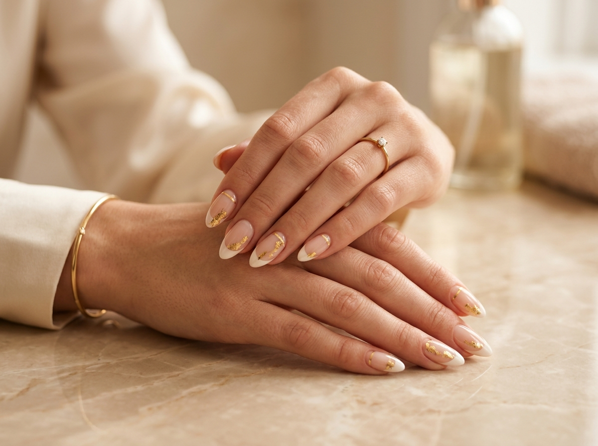

Kusursuz bir seansın üç adımı, tek bir ışıltıda buluşuyor.
Özel tasarım, profesyonel protez uygulaması ve besleyici bakım — Ezgi Yiğit Nails'te her randevunun değişmeyen kalite standardı.



Kendi tasarımınızı planlayın
Düzce stüdyomuzda hayalinizdeki tırnak tasarımını oluşturmak ve randevunuzu ayırtmak için hemen iletişime geçin.
Instagram'dan Randevu Al